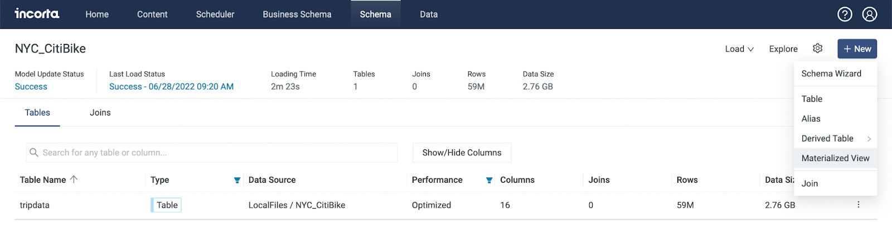

Last Updated: 2022-07-27
用建立SQL Materialized View(MV)的方式來打開Incorta Notebook
Schema → +New → Material View → Choose Language → Edit in Notebook



一個Notebook有好幾個Paragraph
當Notebook用來編輯SQL的時候，可以有很多個Query但是只會有一個被用來Query資料
每個MV是結果的儲存，在Incorta的平台裡，它的作用是做資料的整合
sql% 下面可以寫 Query
Overview the data
SELECT * FROM [schema].[table]
Example
%sql
SELECT * FROM NYC_CitiBike.DATE_HANDLINGStructure of the data
藉由 DESC 可以查看資料表的結構，可以看到 column name, data type, comment
DESC [schema].[table]
Example
%sql
DESC NYC_CitiBike.DATE_HANDLING可以寫 SQL 來分析資料
Example
查看每個租借自行車站，最早被租借時間和最近被租借時間，可以觀察到設站時間或是撤站時間
%sql
SELECT start_station_id,
min(starttime_as_timestamp) first_starttime,
max(starttime_as_timestamp) lastest_starttime
FROM NYC_CitiBike.DATE_HANDLING
GROUP BY start_station_id
ORDER BY min(starttime_as_timestamp)繪製資料圖
Incorta Notebook 可以繪製各種資料圖
分別有 Bar Chart、Pie Chart、Area Chart、Line Chart、Scatter Chart
可以依需求自行決定，直接點選圖標即可轉換
Example
Frequency of renting each year
Bar Chart
Pie Chart
Area Chart
Line Chart
Scatter Chart
Settings
點進 Settings 可以編輯 keys, groups, values ，拖拉variavles即可，也可以更改 xAxis方向
點擊 Paragraph 右上角 ⊕ ，使他變成綠色勾勾✅，即代表儲存此 paragrph 為 Materialized View
每一個 Notebook 僅儲存一個 paragraph 為 Materialized View